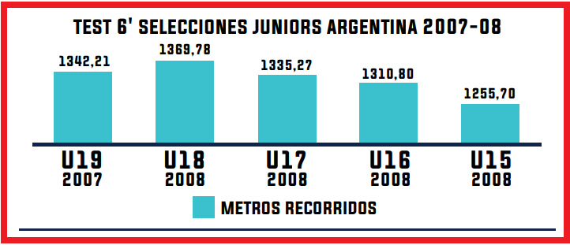

Evaluación

La evaluación del entrenamiento es fundamental para comprobar el correcto desarrollo del programa y para realizar los posteriores ajustes que resulten pertinentes. Entre las formas de evaluar el rendimiento del atleta, considero tres fundamentales:
- Competición: Es la forma de evaluar más directa y específica. Mediante las competiciones secundarias podemos evaluar con la mayor precisión el estado del atleta, sus carencias y sus fortalezas a través de parámetros objetivos como tiempos y distintas mediciones, imágenes o las propias sensaciones del deportista.
- Entrenamiento diario: observando a los deportistas, mediante la información que proporciona el entrenamiento diario se puede aproximar con bastante precisión el estado actual del deportista, y si va cumpliendo con las previsiones establecidas.
- Test: otra manera de comprobar la evolución de determinadas capacidades o habilidades. Hay que ser cuidadoso con la realización de test, ya que en muchas ocasiones suponen la pérdida de entrenamientos debido a que hay que realizarlos en condiciones de baja fatiga para que sean válidos. Además, suponen un estrés añadido al atleta.
Hay que seleccionar muy bien los test para que sean muy específicos, que lo que queremos medir tenga una alta correlación con el rendimiento competitivo del atleta, que la información que nos proporcionen sea útil y práctica para los posteriores entrenamientos y que esta información no pueda ser obtenida por medios menos «invasivos».
PROPÓSITO
- DISEÑO DE PERFIL (FORTALEZAS Y DEBILIDADES).
- FEEDBACK OBJETIVO HACIA EL JUGADOR.
- INFORMES PRECISOS PARA EL ENTRENADOR Y DIRECTIVOS.
- ENFOQUE INDIVIDUAL PARA EL DESARROLLO A CORTO, MEDIANO Y LARGO PLAZO.
- EVALUAR EFECTOS DE ENTRENAMIENTO Y ÉXITO EN COMPETENCIA.
- GENERAR BASE DE DATOS.
- INDICADORES DE VUELTA A ENTRENAMIENTOS/ COMPETENCIA.
CONSIDERACIONES A LA HORA DE EVALUAR
A la hora de llevar a cabo las evaluaciones, el orden de las mismas debe estar estandarizados (de lo simple a lo complejo) y mantener siempre las mismas condiciones de evaluación.
Se evalúa 1 jugador por vez y si es posible 3 por turno, con al menos 2 a 3 minutos de pausa entre cada uno.
El profesor se tiene que asegurar que el jugador esté física y mentalmente “fresco”. Esa preparación debe llevarse adelante desde la entrada en calor-activación, y al realizar esfuerzos máximos.
Durante la evaluación el profesor tiene que motivar a los jugadores y darles instrucciones simples y precisas para que la evaluación sea efectiva.
IMPORTANTE: Nunca se debe intentar evaluar a un jugador que no domine perfectamente bien la técnica del ejercicio a evaluar, que no haya pasado por un periodo de adaptación o nunca haber utilizado la carga externa con la que se evalúa:SER CRITERIOSO.
BATERIAS DE EVALUACIONES:
La fuerza máxima es la base para desarrollar los otros tipos de fuerzas, la evaluación de la fuerza máxima nos permite las siguientes acciones que son fraccionar cargas de entrenamiento físico, monitorear evoluciones en los procesos de entrenamiento y comparar resultados con datos nacionales e internacionales.
Este método consiste en obtener la mejor marca del deportista en un ejercicio que tiene que ser igual al ejercicio que ejecuta a diario, en el estímulo de gimnasio con los mismos elementos; es decir, se evaluara fuerza máxima sólo en el caso de contar con los implementos necesarios para desarrollar el programa de fuerza y la posterior evaluación del mismo.
La cantidad de repeticiones a evaluar van hacer 6 MR para menores de U17 y 4 MR para mayores U17 en ejercicios de empuje.
-
Empuje
- Press Plano
- Sentadilla al cajón
El test propuesto que evalúa esta capacidad de manera más óptima siguiendo el criterio de especificidad para el deporte del baloncesto es el Test de los 6 minutos que determina los niveles de la Capacidad de Resistencia al Esfuerzo aeróbico en cancha (28 metros), mediante el test de 6 minutos continuos: frenando en línea final con una pierna (izquierda) y en la línea final contraria con la otra pierna (derecha).
Su realización es en el mismo lugar del campo de juego donde se lleva a cabo la práctica del deporte, aprovechando las medidas de la cancha, insertando un componente neuromuscular de frenos y salidas con ambas piernas, tiene un alto grado de especificidad en este deporte.
Los datos a obtener mediante el test es la suma de las canchas y aquellos metros donde el atleta finalice el Test. Ej: 45 Canchas y 12 metros.
Determinaremos la Distancia Total del test multiplicando las canchas recorridas x 28 y sumando aquellos metros donde finalice el Atleta. Ej. 45x28+12 metros= 1272 metros recorridos.
Los datos obtenidos nos permiten determinar cargas metabólicas para la diagramación de estímulos por objetivos en áreas funcionales aeróbicas.
